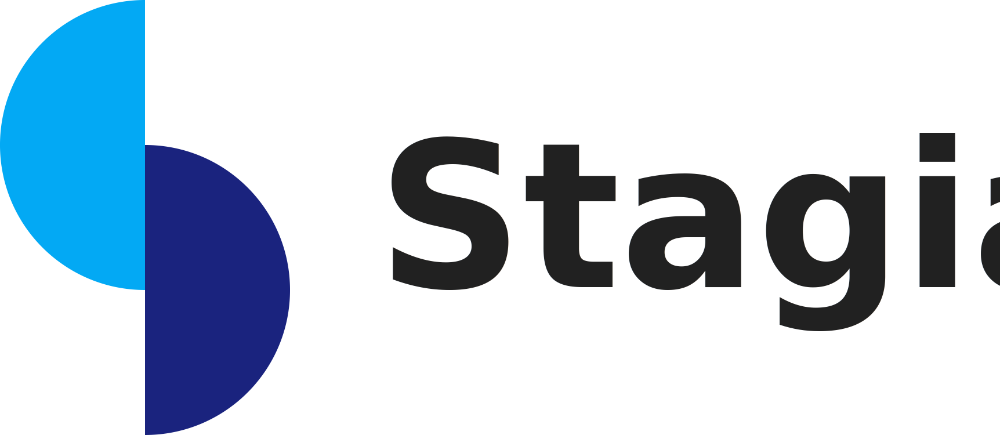

<td-layout
  class="layout-card-over-demo"
  [mode]="'side'"
  [opened]="true"
  sidenavWidth="17%"
>
  <td-navigation-drawer>
    <div>
      
  </div>
    <mat-nav-list>
      <a mat-list-item class='color-text' routerLink="/view/restricted/company" routerLinkActive="active">
        <mat-icon>store</mat-icon>Empresas
      </a>
    </mat-nav-list>
    <mat-nav-list>
      <a mat-list-item class='color-text' routerLink="/view/restricted/opportunity" routerLinkActive="active">
        <mat-icon>work</mat-icon>Vagas
      </a>
    </mat-nav-list>
    <div td-navigation-drawer-menu></div>
  </td-navigation-drawer>
  <td-layout-nav>
    <button mat-icon-button td-menu-button tdLayoutToggle>
      <mat-icon>menu</mat-icon>
    </button>

    <td-layout-card-over [cardTitle]="pageTitle" [cardSubtitle]="pageSubtitle">
      <ng-content #content></ng-content>
    </td-layout-card-over>
  </td-layout-nav>
</td-layout>
